Bekas joined the Kurdish liberation movement in 1965 and worked in the movement's radio station (the Voice of Kurdistan). He left his homeland because of political pressure from the Iraqi regime in 1986. From 1987 to 1992, he lived in exile in Sweden. In 1992, he returned to Iraqi Kurdistan. He died of cancer in Stockholm, Sweden on 4 August 2013.
Bekas was born in Iraqi Kurdistan. His father, Fayaq, was also a poet. Bekas published his first book when he was 17.
In 1971, Bekas introduced the "Rûwange" (vision) element into Kurdish poetry; this was a break from the strict traditional rules of poetry, such as rhyme. The poems translated in "The Secret Diary of a Rose" by Reingard and Shirwan Mirza, with Renate Saljoghi, are examples of this style. For the first time, he introduced the "poster poem" (a term originating from sculpture and painting) in 1975 into the Kurdish poetry. Bekas' works have been translated into Arabic, Swedish, Danish, Dutch, Italian, French and English. In 1987, he was awarded the "Tucholsky scholarship" of the Pen club in Stockholm and in the same year he was awarded the freedom prize of the city of Florence. A two-volume collection of his poetry works has been published in Kurdish under the title "Sherko Bekas' Diwan" in Sweden. These two 1000-page volumes contain his poetic works in their entirety. He has read his poems in Sweden, Denmark, Norway, Germany, Switzerland, Austria, United Kingdom, Russia, and Italy, where he was named honorary citizen of Milan. He visited United States in 1990.
In 1971, Bekas introduced the "Rûwange" (vision) element into Kurdish poetry; this was a break from the strict traditional rules of poetry, such as rhyme. The poems translated in "The Secret Diary of a Rose" by Reingard and Shirwan Mirza, with Renate Saljoghi, are examples of this style. For the first time, he introduced the "poster poem" (a term originating from sculpture and painting) in 1975 into the Kurdish poetry. Bekas' works have been translated into Arabic, Swedish, Danish, Dutch, Italian, French and English. In 1987, he was awarded the "Tucholsky scholarship" of the Pen club in Stockholm and in the same year he was awarded the freedom prize of the city of Florence. A two-volume collection of his poetry works has been published in Kurdish under the title "Sherko Bekas' Diwan" in Sweden. These two 1000-page volumes contain his poetic works in their entirety. He has read his poems in Sweden, Denmark, Norway, Germany, Switzerland, Austria, United Kingdom, Russia, and Italy, where he was named honorary citizen of Milan. He visited United States in 1990.
All right reserved to AUIS ITE 304